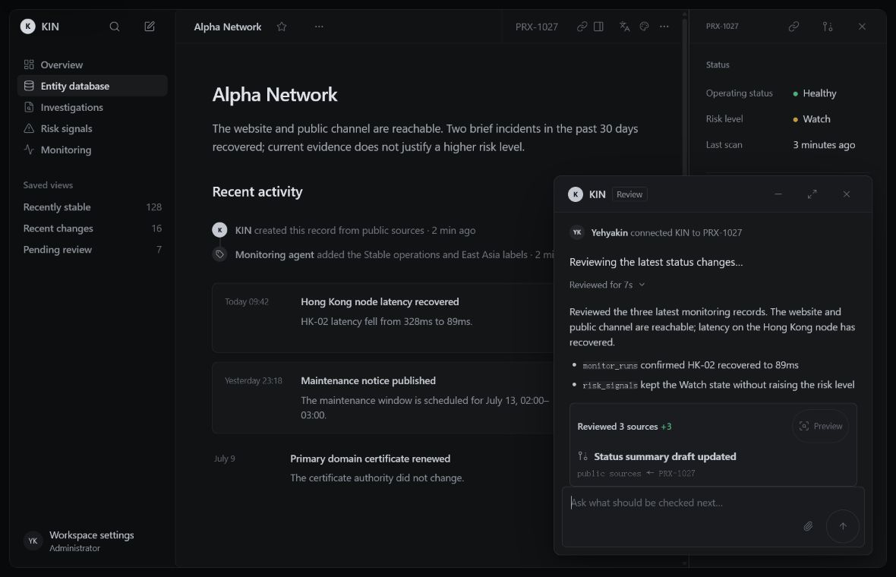

Preparing the reference
KIN Design System
A design contract for products where source, state, decision, and recovery must remain visible.

Four product contexts
KIN changes its composition with the task. Reading, investigation, operations, and precision editing do not share one dashboard template.
Keep the record, source, revision, and next related item in one reading path.
Compare chronology, conflicts, and uncertainty without collapsing them into one score.
Keep price, inventory, channels, approval, and history distinct while editing.
Let the canvas lead while tools, selection, properties, and recovery remain available.
One continuous task
A task should remain legible from entry to action, including the evidence used, the result recorded, and the limits that remain.
An analyst opens an entity investigation from a queue or direct URL.
Evidence and event chronology.
The analyst records an attributable finding or leaves the investigation unchanged.
The local fixture has no live sources, authoritative permission service, or durable finding record.
Following Investigation and Evidence Review
Explore the component systemBuilt to be inspected
Normative contracts, runnable fixtures, generated artifacts, and verification records remain separate. The public surface stays focused; the evidence stays one step away.